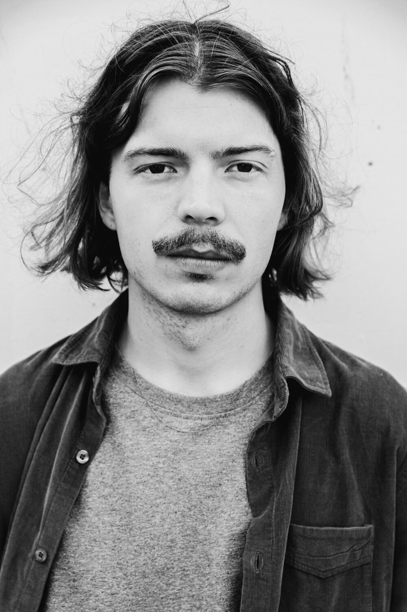

Adam Sass leads People In Orbit, an electroacoustic jazz group he writes for and directs.
He plays with floats, BEQ, Vidar Orchestra, Isildurs Bane and Lina Nyberg. In 2025 he took second prize in Blåsmusikpriset Jazz and played 82 concerts in Sweden, Denmark, the Faroe Islands, Iceland and Germany. He studied at the Malmö Academy of Music with Tomasz Dąbrowski, Peter Asplund and Bobo Stenson.
He writes for larger ensembles too: Is There A Garden In My Head? for big band, Sunrise, Meeting, Remembrance for string quartet and jazz ensemble, and music for the film series Framtidens Historia.
Prizes and grants
- Blåsmusikpriset Jazz, second prize, 2025
- Stim stipendium, 2025
- Kungliga Musikaliska Akademien, national grant, 2024
- Stim Musikdrömmen, 2024
- Malmö Stad Kulturkraft, 2024
- Sten K Johnsons Stiftelse
Records
Press
An impressive achievement which bodes well for the future of this potent outfit.
Jazz Journal, UK
An exciting, well-thought-out and sonically unique album of modern European jazz.
Jazz-fun, Germany
Within its own parameters it is executed with conviction, intelligence and a clear artistic logic.
UK Vibe
Also appears on
- 2026Vidar Orchestra, Vidar Plays Vidar, Vidar Records
- 2026Linjalen, Linjalen XIV
- 2025BEQ, The Common Denominator, Sonde Records
- 2025Erik Wallander, Gränslandet
- 2024Per Gessle, Sällskapssjuk, Parlophone
- 2023Antonio D, Reggae på Svenska
- 2023Idyllia, Ypsilon, Grönskan
- 2022Hans Majestät, Frukt Vol. 2
- 2022You Thant, In Search Of Incredible
- 2021Isildurs Bane, In Disequilibrium, Ataraxia
- 2021Duppy Tales, Nightswimming, Amuse
- 2021True Veins, Imago, Timesaver Productions
- 2021Noa Edwardsson, Feeling Well, 343 Sounds
- 2020Clove Pink Tribe, Init, NB Sounds
- 2019Isildurs Bane, In Amazonia, Ataraxia
- 2019Anton Liljedahl, Summarnætur, Tutl Records
Video
Groups
-
Electroacoustic jazz from Malmö. Adam writes all the music and leads the band. Two albums: Close/Away in 2023 and Viewpoint on April Records in 2026.
-
A collective of seven musicians from Sweden and Norway, always writing as a group. Lovisa Lidgren writes the lyrics and most of the vocal melodies. Released on Sonde Records.
Listen to floats and do it now.
LIRA Music Magazine, 2025 -
Released The Common Denominator on Sonde Records in 2025.
-
Vidar Orchestra
Big band. Adam's Is There A Garden In My Head? was written for it, and he plays on Vidar Plays Vidar, 2026.
-
Spontaneity Quartet
Free improvisation.